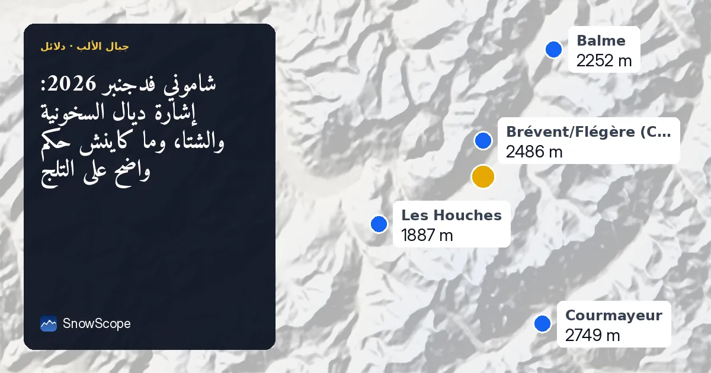
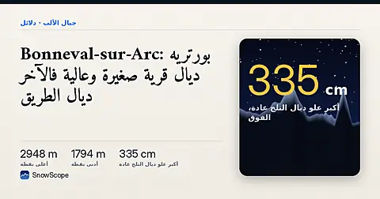

شاموني فدجنبر 2026: إشارة ديال السخونية والشتا، وما كاينش حكم واضح على التلج
القمم الفوقانية ديال Chamonix استيقظت على 27 سم فـ 10 نونبر، بصح محطة ديال القياس ديال الجهة الوسطانية كتحتفظ بـ 1 سم والقاعدة حاري. التوقعات ديال الموسم ديال ديسمبر كتميل نحو الدفيئة والرطوبة شوية، بصح هاد الجهتين كتقريبا تعوضو بعضياتهم—الشهر يجب كيتابع قريب ديال المجموع ديال التلج الكايدة ديالو.
شوف توقعات التلج مباشرة ديال Chamonix فالتطبيق ديال SnowScopeالعلو ديال التلج، التنبيهات والخريطة 3D، فابور.

الارتفاع هو اللي كيقرر الصورة دابا
التلج ديال بداية نونبر كيبقا بـ حيث كيكون بارد. Grands Montets القمة في 2768 م كيحتاوي على 27 سم بعد ما وقع 15 سم فالسبوع اللي قبل. انزل 800 متر نحو الجهة الوسطانية (2001 م) واحنا كنلقاو 1 سم، رغم ما وصل 10 سم فنفس السبعة أيام. القاعدة في 1234 م ما فيها حتا حاجة.
هاد هي القصة ديال خط التلج العالي. على الخريطة ديال SnowScope، 47 فالمائة ديال شباك ديال 60 كم حول Chamonix هي بيضاء—مسيف ديال Mont Blanc والجهة الفوقانية ديال Valais—بصح الوديان تبقا حاري. السبعة أيام اللي جاية ممكن تضغط 26 سم أخرين فالجهة الفوقانية و5 سم للجهة الوسطانية.
ما فيش نمط واضح فالجبال بحال دابا
كاين ما SnowScope كتقارن كل بقعة ديال الجبل معا ديالها ديال الـ 24 ديسمبر اللي فاتو، أكثر الأراضي حول Mont Blanc ما تبين سيگنال قوي. 86 فالمائة ديال التضاريس ما عندها اتجاه واضح. 14 فالمائة كتميل نحو الرقة (بالخصوص Pre-Alps السفلانية قرب Annecy)، وحتا بلاصة ما تبرز كطبيعي أكثر ثلج.
فارتفاع الجهة الوسطانية، الاحتمالية ديال تلج جديد أكثر من ديسمبر نورمالي هي 45 فالمائة. ديسمبر نورمالي كيجيب 68 سم ديال تلج جديد هناك؛ التوقعات ديال هاد السنة كتقترح 66 سم. في 31 ديسمبر، العلو النورمالي هو 92 سم والعمق ديال التوقعات 85 سم، أحسن احتمالية بين 71 و103 سم.

الدفيئة والرطوبة فمجاهدة
النظام ديال الموسم ديال أوروبا معا 51 مجرى كتتفق بقوة على حاجة وحدة: ديسمبر غايكون دفيئ. متوسط الاحترار فالمنطقة كلها هو 1.6 °C فوق النورمال، معا 84 فالمائة ديال المجاري أكثر دفيئة. الأمطار كتكون 11 فالمائة أكثر رطوبة من النورمالي 128 ملم، مفضولة ديال 65 فالمائة ديال المجموعة.
هاد السيگنالات كتجاهد فاتجاهات مختلفة. الارتفاع العالي كيحفظ الأمطار كتلج؛ الارتفاعات السفلانية كتدفع الثمن ديال شهر دفيئ فشكل ديال المطر وخط تلج كيصعد. فـ Chamonix ديالنا ديال الـ 45 ديسمبر اللي فاتو، العمق ديال التلج هنا كتابع الأمطار أكثر بشكل قوي (التقابل 0.94) من درجة الحرارة، ولهاك السباب التوقعات كتبقا قريبة من النورمال—الجهتين كتقريبا تلغي بعضياتهم.


ثلاثة ديسمبرات اللي كانت بهاد الطريقة
الثلاثة ديسمبرات اللي فاتو اللي الطقس ديالهم أكثر ما يطابق هاد التوقعات هي 2002 و2022 و2014. بصح تلك الثلاثة ما كانت متشابهة ليالتلج. هاد الصدق مهم: التوقعات كتميل الاحتماليات بشوية بـ فقط؛ ما كتحفظ نتيجة الشهر.
الدرس ديال المفتاح هو التنويع. السنوات الدفيئة ما تعني دايما تلج رقيق كاين ما كتاخد الرطوبة فالحساب. تخطط على الأراضي العالية الأولى—Grands Montets القمة والمقاربات ديال الجليد—واقبل البيستات السفلانية كـ مكافأة. شوف التوقعات ديال 7 أيام قبل ما كتقرر على السفر.

شنو اللي تتفرج عليه فالأسابيع اللي جاية
بداية ديسمبر كتبقا فتعادل. الغطاء الرقيق فالجهة الوسطانية ممكن يتماسك، ولا دفيئة ديسمبر ممكن تضغط خط المطر أعلى. الفرق بين شهر جيد وشهر رقيق ممكن يتعلق فاش ديسمبر كتميل أكثر نحو الدفيئة ولا الرطوبة فأول خمسة عشر يوم ديالو.
استعمل الخريطة ديال SnowScope لتتابع خط التلج كاين ما التوقعات ديال 7 أيام كتتطور. هاد الطبقة كتقول ليك أكثر على شنو البيستات ديال الواد اللي كتسكايابل من أي توقعات موسمية وحدة كتقدر.
نصايح للي كيتزلجو
- ابدا أيام ديسمبر ديالك على Grands Montets القمة والأراضي ديال الجليد؛ الارتفاع العالي كيحفظ أحسن احتماليات ديال التلج.
- تفرج على التوقعات ديال 7 أيام بقرب ليتبدلات ديال خط المطر. فترة دفيئة فوسط الشهر ممكن تضغط المطر أعلى وتقلل الغطاء ديال الجهة الوسطانية.
- التوقعات كتمتد من 71 لـ 103 سم في 31 ديسمبر فالجهة الوسطانية؛ استعمل القاع ديال هاد الشريط لتتخطط بحرص في البداية، الأعلى كاين ما كيتطور.
- قبل ما كتحجز ديسمبر متأخر، قارن التوقعات ديال 7 أيام فهاك الوقت معا هاد النظرة ديال الموسم. التوقعات ديال الموسم كتكون أدلة، ما حتميات.
- ركب خريطة عمق التلج ديال SnowScope كل سبوع لتشوف فين خط التلج كيبقا كاين ما ديسمبر كيتطور.
على هاد الأرقام
العلو ديال التلج فالمحطات هو أكثر تلج فالجهة الفوقانية فالتاريخ المكتوب؛ هادو تقديرات لمنطقة، ماشي قياس فنقطة وحدة. التوقعات يمكن تتبدل. ديما شوف النشرة الرسمية ديال الانهيارات قبل ما تخرج من البيست.
كيفاش تستاشهد بهاد المقال
للبحث، التعليم ولا الصحافة: الأرقام والرسومات تقدر تعاود تخدم بيهم بحرية تحت CC BY 4.0 مع هاد الاستشهاد.
SnowScope (2026), شاموني فدجنبر 2026: إشارة ديال السخونية والشتا، وما كاينش حكم واضح على التلج, https://snowscope.app/blog/ar/2026/11/chamonix-december-2026-snow-outlook.html, تشاف ف 2026-11-10
SnowScope (Atlas Labs). (2026, November 10). شاموني فدجنبر 2026: إشارة ديال السخونية والشتا، وما كاينش حكم واضح على التلج. SnowScope snow reports. https://snowscope.app/blog/ar/2026/11/chamonix-december-2026-snow-outlook.html
BibTeX
@misc{snowscope2026chamonixdecember2026snow,
author = {{SnowScope (Atlas Labs)}},
title = {شاموني فدجنبر 2026: إشارة ديال السخونية والشتا، وما كاينش حكم واضح على التلج},
year = {2026},
month = nov,
howpublished = {\url{https://snowscope.app/blog/ar/2026/11/chamonix-december-2026-snow-outlook.html}},
note = {Published 2026-11-10 09:29 UTC; accessed 2026-11-10}
}· CC BY 4.0 · الطريقة، الداتا والأدوات →
تابع Chamonix
فابور: ميساج ملي يجي التلج، والتوقعات كل صباح.
تقارير أخرى ديال التلج

إمتى تحجز Courchevel و 3 Vallées، أشمن قرية تختار وفين كيبقى التلج، من 46 شتوة اللي فاتت.

Bonneval-sur-Arc كاينة فـ 1,794 م فالوادي العالي ديال Arc، محسومة بـ Iseran فالشتا. العلو ديال التلج كيتراوح من 99 سم فالقاعدة حتى 335 سم فالقمة. معطيات من 46 شتوات اللي فاتو، نونبر 2026.

Sella Ronda من Sëlva ف Val Gardena: الكولات ديال Gardena و Campolongo و Pordoi و Sella بالترتيب، مع التاريخ ديال التلج ديالنا ف 46 شتوة اللي فاتت.